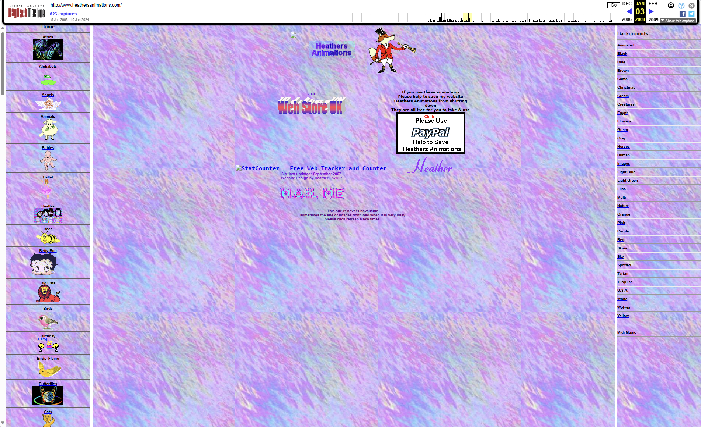
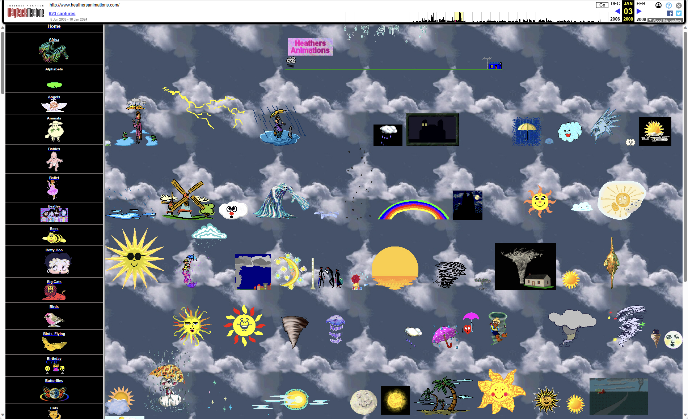

找到了个古早GIF收录站, 现已无法访问. 得依靠Wayback Machine来获取archive.
http://www.heathersanimations.com/
2008年时的记录可以访问, 之后的可能不能了.
 
点开一个gif主题会自动下载一个midi文件, 每个主题不一样. 估计设计时是点开后会播放midi, 但是现在变成下载了.
weather的这个midi很好听啊. 我放在这儿:
download weather raining men.mid
general midi也成怀旧核的元素了吗…